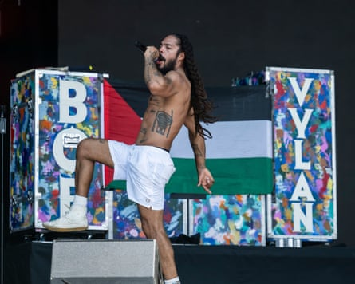

Chants of death to the Israeli military at Glastonbury were “appalling” and the BBC and the festival have questions to answer, Wes Streeting has said, while adding that Israel needs to “get its own house in order”.
The health secretary said the chanting should not have been broadcast to those watching at home, highlighting that Israelis at a similar music festival were kidnapped, murdered and raped.
“I thought it’s appalling, to be honest, and I think the BBC and Glastonbury have got questions to answer about how we saw such a spectacle on our screens,” he told Sunday Morning with Trevor Phillips on Sky News. “But I also think it’s a pretty shameless publicity stunt, which I don’t really want to give too much indulgence to for that reason.”
He also had strong words for Israel, which has condemned the chanting. Streeting said what people should be talking about in the context of Israel and Gaza is the humanitarian catastrophe in the territory and the fact that Israeli settlers attacked a Christian village in the West Bank this week.
“All life is sacred. And I find it pretty revolting we’ve got to a state in this conflict where you’re supposed to sort of cheer on one side or the other like it’s a football team,” he said.
Asked about the Israel embassy’s response to the chants at Glastonbury, he said: “Well, I’d say sort of two things in response to those words from the Israeli embassy. Firstly, I do think that if I take the equivalent of the war in Ukraine, I’m unequivocal about which side of that war I’m on. I want Ukraine to win. Would I be celebrating or chanting for the death of Russian soldiers? No, I want to see an end to the war, and I want to see an end to the conflict.
“I’d also say to the Israeli embassy, get your own house in order in terms of the conduct of your own citizens and the settlers in the West Bank. So, you know, I think there’s a serious point there by the Israeli embassy I take seriously. I wish they’d take the violence of their own citizens towards Palestinians more seriously.”
Police are examining videos of comments made by the acts Bob Vylan and Kneecap at Glastonbury as the festival enters its third day.
Bobby Vylan, of the rap punk duo Bob Vylan, led crowds in a chant of ‘Death, death to the IDF’.Photograph: Anthony Devlin/Hogan Media/Shutterstock
On Saturday the rapper Bobby Vylan, of the rap punk duo Bob Vylan, led crowds at the festival’s West Holts stage in chants of “Free, free Palestine” and “Death, death to the IDF [Israel Defense Forces]”.
Glastonbury organisers said on Sunday that the act had crossed a line. “With almost 4,000 performances at Glastonbury 2025 , there will inevitably be artists and speakers appearing on our stages whose views we do not share, and a performer’s presence here should never be seen as a tacit endorsement of their opinions and beliefs,” the festival said in a statement.
“However, we are appalled by the statements made from the West Holts stage by Bob Vylan yesterday.
“Their chants very much crossed a line and we are urgently reminding everyone involved in the production of the festival that there is no place at Glastonbury for antisemitism, hate speech or incitement to violence.”
Bob Vylan performed before the Irish rap trio Kneecap, who suggested fans “start a riot” outside his bandmate’s upcoming court appearance during their set on the same stage later in the afternoon.
The Kneecap member Liam Óg Ó hAnnaidh, known as Mo Chara, was charged with a terror offence for holding a Hezbollah flag at a London gig last November.
Ó hAnnaidh told the crowd on Saturday: “Glastonbury I’m a free man! If anybody falls down, you’ve got to pick them up. We’ve got to keep each other safe.” He thanked the Eavis family, the festival’s organisers, for “holding strong” and allowing their performance to go ahead.
Avon and Somerset police said: “We are aware of the comments made by acts on the West Holts stage at Glastonbury festival this afternoon. Video evidence will be assessed by officers to determine whether any offences may have been committed that would require a criminal investigation.”
The Israeli embassy said it was “deeply disturbed by the inflammatory and hateful rhetoric expressed on stage at the Glastonbury festival”.
A statement on X said: “Freedom of expression is a cornerstone of democracy. But when speech crosses into incitement, hatred, and advocacy of ethnic cleansing, it must be called out – especially when amplified by public figures on prominent platforms.
“Chants such as ‘Death to the IDF,’ and ‘From the river to the sea’ are slogans that advocate for the dismantling of the state of Israel and implicitly call for the elimination of Jewish self-determination. When such messages are delivered before tens of thousands of festivalgoers and met with applause, it raises serious concerns about the normalisation of extremist language and the glorification of violence.
“We call on Glastonbury festival organisers, artists, and public leaders in the UK to denounce this rhetoric and reject of all forms of hatred.”
Kemi Badenoch, the Conservative party leader, called the scenes “grotesque”, and said: “Glorifying violence against Jews isn’t edgy. The west is playing with fire if we allow this sort of behaviour to go unchecked.”
Asked about the controversy ahead of Kneecap’s performance on Wednesday, Emily Eavis said: “There have been a lot of really heated topics this year, but we remain a platform for many, many artists from all over the world and, you know, everyone is welcome here.”